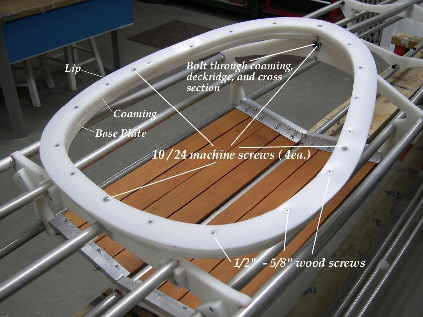

| HDPE Coaming (3 of 4) | Menu Previous Page Next Page |
|

Attaching Coaming to Frame - The coaming lip is attached to the coaming with 1/2" or 5/8" wood screws. The base plate stays
independent of the other two sections. Next, the 3 coaming rings are attached through the deckridge and cross sections 4 and 5 with
2ea. X 10 / 24 machine screws/nuts to create a secure bond to the frame. The stiff coaming, combined with it's secure attachment
adds rigidity to the frame. Two additional machine screws are used to secure the sides of the 3 coaming rings together. A wood
coaming, though similar, can be glued between the lip and coaming.
|
|